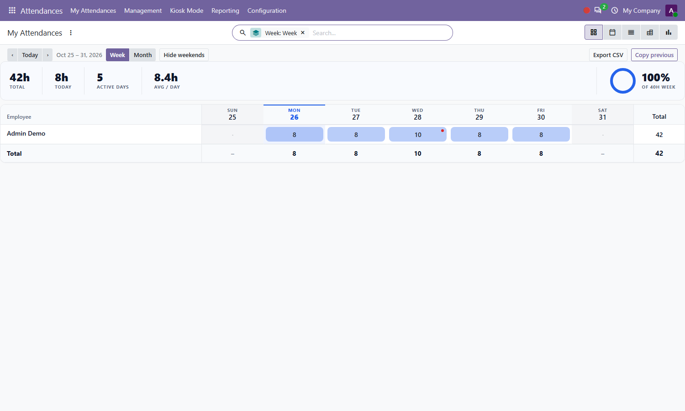
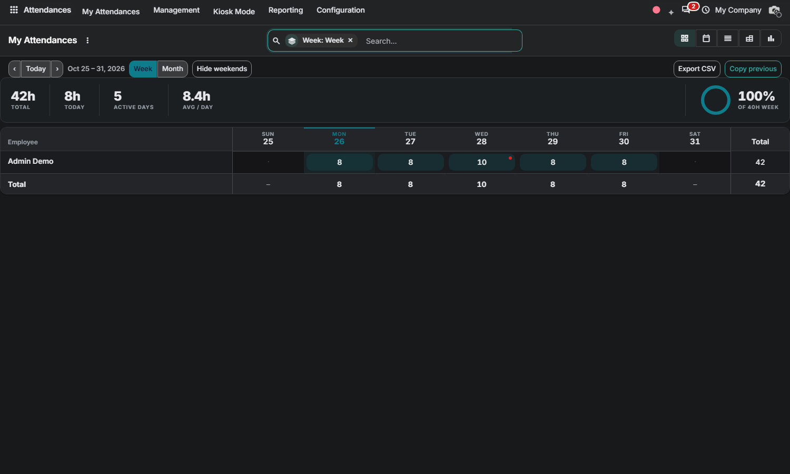

Free Odoo 20.0 Community • By Zeetavix
Nova Attendance Grid brings the Enterprise-style grid experience to Community attendance — rebuilt from scratch: correct recorded time inline by adjusting check-outs, with overtime dots, heatmap intensity, sticky headers, week/month ranges, weekend toggle and a capacity ring against the 40-hour week.
Rows are employees, columns are days. Click a cell and type a correction — the grid adjusts the check-out, guards the 24-hour day, and never fabricates a check-in. Empty days stay empty until someone checks in.

The grid follows your backend theme: elevated header/footer bands, dimmed weekends, damped heat pills and a theme-aware accent.

Nova Grid (bundled engine, auto-installed dependency) • hr_attendance
By Zeetavix — https://zeetavix.com
Version: 20.0.1.0.1
License: LGPL-3 (free and open source)
Price: Free
Dependencies: nova_grid, hr_attendance
Built for: Odoo 20 Community — no
Enterprise code used or required.
Install: drop the nova_attendance_grid
folder in your addons path, update the apps list,
install. Installing this module pulls in the nova_grid engine automatically.
Support: support@zeetavix.com — found a bug? open a GitHub issue